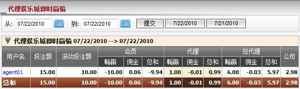
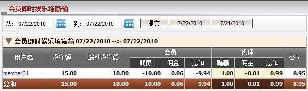
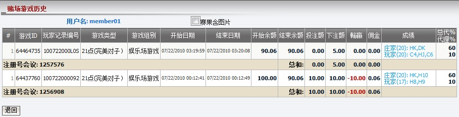
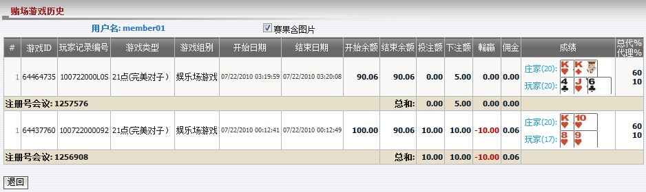

娱乐城即时输赢
定义:
娱乐城即时输赢是一份不断更新总代理关于游戏结束后的娱乐城输赢,佣金的报告。

图: 1.1
用词注解:
-
投注额: 总投注额于娱乐城游戏。
- 滚动投注额: 总投注于娱乐城游戏除了和局游戏。
- 会员输赢: 会员输赢的输额。
- 会员佣金: 会员从代理处收取的佣金输额。
- 会员总和: 会员包括佣金的总输赢数额。
- 代理输赢: 代理基于占成数的输赢数额。
- 代理佣金: 扣除会员佣金后, 代理从上线处收到的佣金数额。
- 代理总和: 代理包括佣金的總輸贏數額。
- 总代理输赢: 总代理基于占成数的输赢数额。
- 总代理佣金: 扣除代理佣金后, 总代理从上线处收到的佣金数额。
- 总代理总和: 总代理包括佣金的总输赢数额。
- 公司: 总代理需支付予或从上线处接收到的总数额。
点击代理用户名以查看从属特定代理的会员的即时娱乐场输赢报告 (图1.2)。

图: 1.2
用词注解:
要查看赌场游戏历史, 您可点击会员用户名 (图1.3)。

图: 1.3
用词注解:
- 游戏类型: 游戏种类。
- 游戏组别: 该游戏属于的组别。
- 开始余额: 游戏结束前的原始余额。
- 结束余额: 游戏结束后的整体余额。
- 投注额: 投注金额。
- 下注额 = 投注金额 - 和局金额。
- 输赢: 输赢数额。
- 佣金: 佣金数额。
- 成绩: 游戏结果。
- 总代%: 总代理占成数。
- 代理%: 代理占成数。
- 注册号 ID: 独特的数字以识别访问娱乐城的会员。
如何理解报告:
此报告根据游戏ID降序排列 (图1.3)。让我们计算master1, agent01对于member01的输赢如图1.1和图1.2显示。 在这份报告, member01两次访问娱乐城玩游戏。
-
注册号 ID= 1256908: member01 进行21点游戏, 投注额 = 10, 会员佣金 = 0.6%, 总代理占成 = 60%, 总代理佣金 = 0.8% , 代理占成 = 10%, 代理佣金 = 0.6% 和会员输了此投注。
开始余额 = 100.
投注额 = 下注额 = 10.
会员输赢 = -投注额 = -10.
会员佣金 = 佣金 = 投注额 * 会员佣金 = 10 * 0.6% = 0.06.
会员总和 = 会员输赢 + 会员佣金 = -10 + 0.06 = -9.94.
结束余额 = 开始余额 + 会员输赢 + 会员佣金 = 100 - 10 + 0.06 = 90.06.
代理输赢 = 投注额 * 代理占成 = 10 * 10% = 1.
代理佣金 = 投注额 * 代理佣金 * (1 - 代理占成) - 会员佣金 = 10 * 0.6% * (1 - 10%) - 0.06 = -0.01.
代理总和 = 代理输赢 + 代理佣金 = 1 - 0.01 = 0.99.
总代理输赢 = 投注额 * 总代理占成 = 10 * 60% = 6.
总代理佣金 = 投注额 * 会员佣金 * [1 - (总代理占成 + 代理占成)] - 投注额 * 会员佣金 * (1 - 代理占成) = 10 * 0.8% * [1 - (60% + 10%)] - 10 * 0.6% * (1 - 10%) = -0.03.
总代理总和 = 总代理输赢 + 总代理佣金 = 6 - 0.03 = 5.97.
-
第二个注册: member01 投注 5 于21点的游戏类型, 会员佣金 = 0.6%, 总代理占成 = 60%, 总代理佣金 = 0.8% , 代理占成 = 10%, 代理佣金 = 0.6% 和会员此投注和局。
开始余额 = 结束余额于一个投注 = 90.06.
投注额 = 0.
会员输赢 = 0.
会员佣金 = 佣金 = 0.
会员总和 = 0.
结束余额 = 开始余额 + 会员输赢 + 会员佣金 = 90.06 + 0 + 0 = 90.06.
代理输赢 = 0.
代理佣金 = 0.
代理总和 = 0.
总代理输赢 = 0.
总代理佣金 = 0.
总代理总和 = 0.
从以上两个投注, 我们知道最后的结果显示在图1.1和图1.2:
图 1.2:
- 投注额 = 10 + 5 = 15.
- 滚动投注额 = 10 + 0 = 10.
- 会员输赢 = -10 + 0 = -10.
- 会员佣金 = 0.06 + 0 = 0.06.
- 会员总和 = -9.94 + 0 = -9.94.
- 代理输赢 = 1 + 0 = 1.
- 代理佣金 = -0.01 + 0 = -0.01.
- 代理总和 = 0.99 + 0 = 0.99
- 公司 = -(会员总和 + 代理总和) = -(-9.94 + 0.99) = 8.95.
图 1.1:
- 投注额 = 10 + 5 = 15.
- 滚动投注额 = 10 + 0 = 10.
- 会员输赢 = -10 + 0 = -10.
- 会员佣金 = 0.06 + 0 = 0.06.
- 会员总和 = -9.94 + 0 = -9.94.
- 代理输赢 = 1 + 0 = 1
- 代理佣金 = -0.01 + 0 = -0.01.
- 代理总和 = 0.99 + 0 = 0.99.
- 总代理输赢 = 6 + 0 = 6.
- 总代理佣金 = -0.03 + 0 = -0.03.
- 总代理总和 = 5.97 + 0 = 5.97.
- 总和 = -(会员总和 + 代理总和 + 总代理总和) = -(-9.94 + 0.99 + 5.97) = 2.98.
注:
- 此报告只包含娱乐城输赢数额。
- 要查看娱乐城游戏的图片成绩, 勾取 "赛果含图片" 复选框 (图1.4)。

图: 1.4